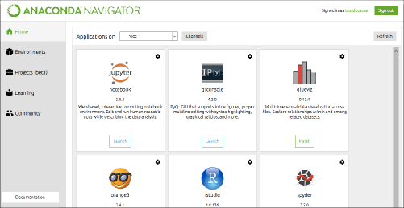

ANACONDA DISTRIBUTION STARTER GUIDE
See full documentation for Anaconda Distribution
docs.anaconda.com/anaconda/
BEFORE YOU START
Why do I need Anaconda Distribution?
Installing Python in a terminal is no joy. Many scientific packages require a specific version of Python to run, and it's difficult to keep them from interacting with each other. It is even harder to keep them updated. Anaconda Distribution makes getting and maintaining these packages quick and easy.
What is
Anaconda Distribution?
It is an open source, easy-to-install high performance Python and R distribution, with the conda package and environment manager and collection of 1,000+ open source packages with free community support.
Then what is Miniconda?
It’s Anaconda Distribution without the collection of 1,000+ open source packages. With Miniconda you install only the packages you want with the conda command, conda install PACKAGENAME
Example: conda install anaconda-navigator
GET IT
Will it work on my machine?
Quick install it
Take the test drive
Get your conda cheat sheet
Yes, Anaconda Distribution is available for Windows, macOS or Linux x86 or POWER8, 32- or 64-bit, 3GB HD available. Miniconda is the same but needs only 400 MB HD.
docs.anaconda.com/anaconda/install conda.io/docs/using/cheatsheet.html
conda.io/docs/test-drive.html
NOW PLAY WITH THE WORLD'S MOST AWESOME SCIENTIFIC PACKAGES
Included in Anaconda 4.4+, or get with "conda install PACKAGENAME"
NumPy
numpy.org
N-dimensional array for numerical computation
SciPy
scipy.org
Scientific computing library for Python
Matplotlib
matplotlib.org
2D Plotting library for Python
Pandas
pandas.pydata.org
Powerful Python data structures and data analysis toolkit
Seaborn
seaborn.pydata.org/
Statistical graphics library for Python
Bokeh
bokeh.pydata.org
Interactive web visualization library

Scikit-Learn
scikit-learn.org/stable
Python modules for machine learning and data mining
NLTK
nltk.org
Natural language toolkit
Jupyter Notebook
jupyter.org
Web app that allows you to create and share documents that contain live code, equations, visualizations and explanatory text
R essentials
conda.pydata.org/docs/r-with-conda.html
R with 80+ of the most used R packages for data science
“conda install r-essentials”
R package list
docs.anaconda.com/anaconda/rlanguage-pkg-docs
CONTINUED ON BACK →
ANACONDA NAVIGATOR CHEAT SHEET
See full documentation for Anaconda Navigator
docs.anaconda.com/anaconda/navigator/
Before you Start
What is
Anaconda Navigator?
Anaconda Navigator is an easy way to use graphical Python programs without having to use command line commands.
Get It
Will it work on my machine?
Anaconda Navigator is available for Windows, macOS or Linux, 32- or 64-bit, 3GB HD available. Navigator is automatically installed when you install Anaconda Distribution.
Follow the graphical install instructions
docs.anaconda.com/anaconda/install
Open
Anaconda Navigator
After install, look on your desktop or programs menu for Anaconda Navigator and click it.
NOW PLAY WITH THE WORLD'S MOST AWESOME SCIENTIFIC PACKAGES

MORE RESOURCES
Free email group support Paid support
Training Consulting
http://bit.ly/anaconda-community anaconda.com/anaconda-support anaconda.com/training anaconda.com/anaconda-consulting
Follow us on Twitter @anacondainc and join the #AnacondaCrew!
Connect with talented, like-minded data scientists and developers while contributing to the open source movement. Visit
anaconda.com/community.
anaconda.com · info@anaconda.com · 512-776-1066 8/20/2017